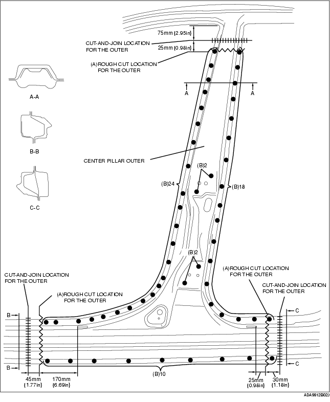

1. Rough cut area (A), drill the 56 weld locations indicated by (B), then remove the center pillar outer.

2. Rough cut area (C) and (D), drill the 11 weld locations indicated by (E)
3. Rough cut area (F), then remove the center pillar reinforcement and B-pillar reinforcement.
4. Drill the 8 weld locations indicated by (G), and remove the center pillar gusset.
5. Drill the 3 weld locations indicated by (H), and remove the side sill reinforcement.
6. Rough cut area (I), drill 15 weld locations (J), and then remove the center pillar inner by pulling it from the lower part.